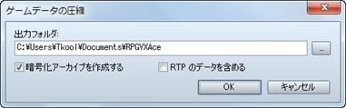
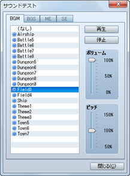
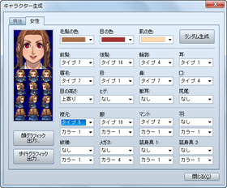
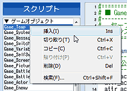

选择[文件] → [压缩游戏数据]，可以保存一个压缩了工程内容的文件，以便于发行完成的游戏。[目标文件夹]框中可以指定文件保存的目标。
保存时，选择[加密游戏数据]的话，工程的内容就会加密为外部不可见的状态。选择了[附带RTP数据]的话，就会带上RTP数据压缩。这样的话需要注意，虽然游戏运行可以脱离RTP，但文件大小会显著增大。
此外，超过约2GB（※）的游戏作品在[压缩游戏数据]时可能会失败。
※ 该数值只是估计值，容量可能会根据使用的PC环境和游戏内容而发生变化。

[工具] → [素材管理] 呼出的 [素材管理] 工具，可以管理工程中所包含的素材文件。窗口各部分的内容和按钮功能将在下面介绍。此外，要在游戏制作中使用原创图片和音乐文件的话，必须按照规定的规格。详情请见“素材规格”。
- ● 文件夹列表
收纳素材文件的文件夹列表。要将素材文件加入工程时，在此指定用途对应的文件夹。
- ● 文件列表
-
显示[文件夹列表]中选择的文件夹中包含的文件。文件名前方有一个标志，红色标志表示单独导入的素材文件，蓝色标志表示RTP中包含的素材文件。
- ● 导入
-
将素材文件导入工程。先将目标文件夹在[文件夹列表]中指定后，再指定素材文件作为导入的对象。此外，导入图片时，可以点击要作为透明色（不显示）的颜色，右击要作为半透明色显示的颜色。
- ● 导出
-
将工程的素材文件保存到工程外部。[文件列表]中先选择好导出的对象，再指定保存位置。导出后，工程内的素材文件仍会保留。此外，拖拽[文件列表]的素材文件可以实现多选并一同导出。
- ● 预览
显示[文件列表]中选择的素材文件。要确认声音文件请使用[声音测试]工具。
- ● 删除
-
从工程中删除[文件列表]中选择的素材文件。RTP默认的素材文件（前方带有蓝色标志的）无法删除。另外请注意，删除的数据无法恢复。

[工具] → [声音测试] 呼出的 [声音测试] 工具可以试听工程中包含的音乐和音效文件。音乐的播放在窗口关闭后仍将继续，因此可以当做在游戏制作中播放BGM的功能使用。
窗口共有4个标签，分别为[BGM]（背景音乐）、[BGS]（背景音效）、[ME]（效果音乐）、[SE]（效果音效）。每个标签都可以在文件列表中指定歌曲。之后点击[播放]就可以开始播放音乐了。要停止播放可以点击[停止]。
播放音量可以在[音量]（0~100%）的滑条中调节、音调可以在[音调]（50~150%）的滑条中调节。

[工具] → [角色生成] 呼出的 [角色生成] 工具，可以轻松制作出分配给角色和事件的人物图像。
要制作图像，首先要点击[男性][女性]标签切换画面。接着在脸的各部分以及服装等设定项目中，指定元件的种类。点击[随机]按钮的话，每个项目的元件都会随机指定。
修改了一个项目的设定后，基本上脸图和行走图都会跟着变化。但是，根据项目不同，只有一边的图片发生变化也是有可能的。
完成图想后，可以保存为图片文件。点击[导出角色肖像图]、[导出角色行走图]按钮，在弹出的窗口中输入文件名（推荐半角英文、数字）后点击[保存]。此外，直接保存在默认的文件夹（“Face”或“Character”）的话，就不需要从[素材管理]导入该文件了。

菜单栏中选择 [工具] → [选项] 后会弹出 [选项] 工具，可以进行有关编辑器上透明色和网格的设置。这些设定完全不影响游戏的运行。
- ● 透明色
该项可以设定图片的“透明色”部分在编辑器上显示的颜色。该颜色由[红][绿][蓝]三个要素指定。透明色的部分会以使用了指定颜色的方格纹显示。
- ● 网格
-
该项可以设定地图编辑模式的地图预览中，网格（方格状的线条）的显示方式。要显示网格时选上[启用]，[横向间隔][纵向间隔]中分别填上网格间隔的图块数（2~100）。

在菜单栏中的 [游戏] → [游戏测试] 中执行的游戏测试功能，可以当场测试制作中的游戏，并且和发行的游戏一样，确认设定和事件是否能按照自己的想法运转。
- ● 调试功能的使用方法
在游戏测试中按下[F9]键会打开调试画面。在这个画面，可以更改这一时刻的开关和变量的值。
要更改变量的值，需要先选择左侧列表中的开关/变量的范围（前方是[S]表示开关，[V]表示变量，数字表示ID的范围），按下确定键后在右侧列表中把光标移到需要改变的开关/变量上面。接着通过确定键更改开关的值（ON/OFF），用左右方向键和L/R键更改变量的值。
- ● 结束游戏测试
在游戏测试时不能编辑游戏的内容。要结束游戏测试，可以点击窗口的［×］（关闭）按钮。此外，也可以按下 [Alt] + [F4] 或者选定游戏菜单中的 [结束游戏] 项目来退出游戏。
管理游戏运行的简易程序称为脚本。
一般而言，有的时候会将[显示文章]之类的命令称为脚本。但是本软件中，脚本指的是比事件指令更加接近程序的一个概念。一切事件指令，事实上本身都不是程序，而是在经过脚本层的解释后执行的。
由于脚本的编辑可以自定义游戏系统本身，是面向高级用户的功能，从而难度会变得更高。但是，只要制作出普通的游戏的话，根本不需要掌握脚本。一开始做游戏先不要管脚本，等到默认系统无法满足你的需求时再来挑战脚本吧。
本软件的脚本引擎不是独立的简易语言，而是采用了硕果累累的「Ruby」脚本语言。Ruby的官方网站是http://www.ruby-lang.org/ です。
「Ruby」是以松本行弘为中心开发的免费软件，用于记述大规模的游戏也拥有足够的性能。然而，「Ruby」本身是擅长文本处理的语言，直接用于游戏开发有一定困难。因此，这里使用的是将「Ruby」在游戏开发上特化的「RGSS」(Ruby Game Scripting System) 系统。详情请见RGSS参考。
- ● 编辑脚本
-

在主菜单的[工具]中选择[脚本编辑器]后，会弹出一个用于编辑脚本的大对话框。
要执行RPG类型的大规模游戏需要大量的程序，因此有必要将整个脚本分割成适当的单位进行管理。本软件将这个单位称为“脚本页”。在脚本编辑器左侧显示的就是脚本页的列表。
脚本编辑器的操作是按照和数据库类似的感觉而设计的。与数据库一样，按下[F4]、[F5]可以简便地选择前后的脚本页。此外，[F6]键的功能是将光标位置上的单词复制到脚本页的名称上。
- ● 脚本页的操作
-

右击脚本页的名字，会拉出一个上下文菜单。在菜单上选择[插入]的话，会在选择的位置前方追加一个新的脚本页。同样，通过[剪切]和[粘贴]操作，可以更改脚本页的顺序。
和数据库不同，脚本页之间并不是通过ID进行管理的。各个脚本页会按照列表显示的顺序，从上到下依次执行。预设脚本的最下方有一个“Main”脚本页，预设脚本的结构是在各项定义全部完成后才真正开始游戏。
- ● 编辑操作
-

右击窗口右侧的文本编辑器部分，会弹出右图所示的上下文菜单。再次可以执行[剪切]、[粘贴]、[查找]、[替换]等基本的编辑操作。
[Ctrl] + [F] 和 [Ctrl] + [G] 等快捷键，即使文本编辑器中没有焦点也是有效的。
当你想要查找全部脚本页，而不只是当前编辑中的脚本页时，可以在脚本页的弹出菜单中选择[查找]。快捷键为 [Ctrl]+[Shift]+[F]。
- ● 脚本的使用方法
-
脚本除了可以在脚本编辑器中直接编辑，还有以下四种使用方法。
- 在事件指令[脚本]中使用。
- 在事件指令[条件分歧]中作为条件使用。
- 在事件指令[变量操作]中作为运算对象使用。
- 在[设置移动路线]中作为指令使用。
这些指令在“在脚本编辑器中独自追加了事件指令”的情况下也可以使用。花点心思，你可能在这里发现各种各样有趣的使用方法。